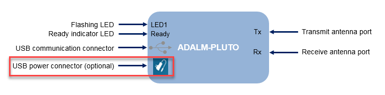

Resolve issues encountered during installation or while using the I/O mode features of the support package.
ADALM-PLUTO radio is not responding to commands or reboots randomly.
See Host USB Port to ADALM-PLUTO Radio Communication Unreliable
Unplug ADALM-PLUTO radio, reboot host computer, plugin ADALM-PLUTO radio, open MATLAB® and at the command line execute:
cd(fullfile(matlab.internal.get3pInstallLocation('libiio.instrset'),'win64','MS64')) system('iio_info -s')
If the host can communicate with the ADALM-PLUTO radio, the radio is ready to use. In this case, you will see an output that lists the radio serial number and USB port information similar to the following:
...
Available contexts:
0: 0456:b673 (Analog Devices Inc. PlutoSDR (ADALM-PLUTO)), ...
serial=104473222a870010050020009db5d52277 [usb:2.11.5]
If the host cannot communicate with the ADALM-PLUTO radio, replace the radio. In this case, you will see an output similar to the following:
... No contexts found.
ADALM-PLUTO radio is unresponsive or commands fail especially when the radio is connected to an unpowered USB hub.
Plug in both USB ports on the PlutoSDR. In addition to connecting the USB communication connector port, also connect a dedicated power source to the USB power connector port on the PlutoSDR.

If PlutoSDR is connected to an unpowered USB hub, switch to a powered USB hub.
Try switching to another USB port on your computer.
The PlutoSDR transmitter input must be complex. This is enforced due to potential for corruption of input signal by the radio hardware IQ imbalance correction when the input transmission signal is real-valued.
Specifically, the problem with receiving a real signal exists if:
PlutoSDR is used in a loopback configurations (LOs for Tx and Rx are locked) and a real signal is transmitted.
Two separate radios are used and the LO frequency offset is less than ~100Hz.
For more information, see Quadrature Tracking.
Specify a complex signal for the transmission.
The model is not running in real-time.
Follow the examples in Detect Underruns and Overruns.
Try using vector-based processing, as described in MATLAB Performance Improvements.
When using PlutoSDR with Communications Toolbox™ Support Package for Analog Devices ADALM-Pluto Radio, you see this message:
Warning: ADALM-PLUTO radio with serial number '<serial num>' has firmware version "0.23". The recommended firmware version is "0.26". Click here to start the Hardware Setup App to update radio firmware to the recommended version. To suppress this warning click here.
The support package issues this warning to alert you when the firmware version installed on your PlutoSDR is not recommended for use with the support package release you are running. If the firmware version on the PlutoSDR is older than the recommended version, you must upgrade your firmware. If the firmware version on the PlutoSDR is newer than the recommended version, you can continue using your PlutoSDR without installing the recommended firmware.
Note
MathWorks® has not tested the stability or performance of PlutoSDR devices with firmware versions newer than the recommended firmware version.
Update to the recommended firmware version:
In MATLAB on the HOME tab, select Manage
Add-Ons from Add-Ons in the
Environment section.
At the right end of the entry for Communications Toolbox Support Package for Analog Devices ADALM-Pluto Radio, click the setup gear button . Clicking the setup gear button opens the Hardware Setup app to update the firmware. Complete the firmware update by following instructions in the app.
Continue using a firmware version that is newer than the recommended version.
When using a newer than recommended firmware version, a warning message is
occasionally printed in the command window noting the mismatch between support
package and firmware version. The warning can be suppressed by entering the
following code at the command line or by adding it to the
startup.m file where you Specify Startup Options.
warning('off','plutoradio:sysobj:FirmwareIncompatible');
If all these conditions are true:
You have Windows® 7 OS.
Both transmitter and receiver tests fail during the hardware setup process.
You see these errors when you call a Pluto radio object.
rx = sdrrx('Pluto');
rx()Undefined function or variable 'internal_design_filter'. Error in comm.libiio.AD9361.Filter.info.designDefaultFilter Error in comm.libiio.AD9361.base/setupFIR Error in comm.libiio.AD9361.base/initDevice Error in comm.libiio.AD9361.Rx/setupImpl
Run the installer as administrator. Exit the installer and MATLAB. Start MATLAB as administrator and start the installer again. To run as administrator, right-mouse click the MATLAB icon and select Run as administrator.
Failure during configuration of ADALM-PLUTO radio on Linux® caused by inability to change the frequency band via the serial port. On certain Linux distributions, such as Ubuntu®, you are not able to communicate with the radio via the serial port to configure the frequency band.
Use ssh to configure the frequency band, as follows:
Determine the IP address assign for the radio. The factory default IP address is
192.168.2.1. Confirm the radio IP address by viewing the
info.html file found in the PlutoSDR folder. The radio appears
as a USB drive named PlutoSDR when the radio is connected to
the host computer.
At the Linux command prompt, enter the following commands (update the IP address to match the one determined in the prior step):
ssh root@192.168.2.1
The authenticity of host '192.168.2.1 (192.168.2.1)' can't be established. ECDSA key fingerprint is SHA256:MrvRV5EM7cdUe2bP0Vt2r4OQ5LKBc3PG08BGYMklblA. Are you sure you want to continue connecting (yes/no)? yes Warning: Permanently added '192.168.2.1' (ECDSA) to the list of known hosts. root@192.168.2.1's password: [ Enter "analog" as password ]
analog
Welcome to: ______ _ _ _________________ | ___ \ | | | / ___| _ \ ___ \ | |_/ / |_ _| |_ ___ \ `--.| | | | |_/ / | __/| | | | | __/ _ \ `--. \ | | | / | | | | |_| | || (_) /\__/ / |/ /| |\ \ \_| |_|\__,_|\__\___/\____/|___/ \_| \_| http://wiki.analog.com/university/tools/pluto
fw_setenv attr_name compatible fw_setenv attr_val "ad9364" pluto_reboot reset
MATLAB returns an error when you attempt to assign an IP address
RadioID:
tx = sdrdev('Pluto', 'RadioID', 'ip:192.168.2.4');
If you cannot successfully assign an IP address RadioID, and you
are using Linux, these additional steps are required to configure and identify the
ADALM-PLUTO radio via IP address:
To determine the IP and MAC addresses assigned the host computer and the IP
address assigned to the ADALM-PLUTO radio, look in info.html. For
example, use the
command:
grep -A 1 'IP Address (\|MAC Address (HOST)' /media/PlutoSDR*/info.html
Determine the Ethernet port assigned to the HW address. For example, use the command:
ifconfig -a | grep eth[0-9]
Map the IP address to the associated Ethernet port based on the HW address
associated with host computer. For example, if the Ethernet port is
eth9 and the IP address is 192.168.2.10 use
the
command:
sudo ifconfig eth9 192.168.2.10
Attempt communicating with the ADALM-PLUTO radio, For example, if the
ADALM-PLUTO radio IP address is 192.168.2.1 use the
command:
ping -c 3 192.168.2.1
MATLAB returns this warning message from a call to the info
method:
info(dev)
## Establishing connection to hardware. This process can take ## several seconds. Warning: Cannot create a driver for the specified address. The address 'ip: 192.168.2.1' is already owned by a block, block dialog, or System object. Stop the simulation, close the open dialog, or call the release method of the System object to allow a new owner to be assigned.
This message means that the radio hardware is in use by another MATLAB or Simulink® session. ADALM-PLUTO radios can become busy when any of the following conditions occur:
A Simulink simulation is in progress.
A receiver or transmitter block is open.
A locked receiver or transmitter System object™ is in memory.
Release the radio hardware by stopping the simulation, closing the block, or calling
the release method of the System object.
You are not receiving data from the radio hardware after streaming starts.
Reestablish Connection. If you do not have a connection, it is possible that a radio identity conflict, a bad cable, or a loss of power is causing the problem. To reestablish connectivity:
Check the cables and power.
To make sure that you have a basic connection, refer to Manual Host-Radio Hardware Setup.
If you cannot establish communication with the host, check your radio hardware for faulty connections or defects.
Synchronize Software and Radio Hardware
For a radio object: Use the info method.
For a receiver block: Open the block mask and click Info.
For a receiver System object: Use the info method.